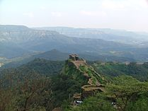

Maharastra
Maharashtra ( Marathi: [məharaːʂʈrə] (About this soundlisten), abbr. MH) is a state in the western peninsular region of India occupying a substantial portion of the Deccan Plateau. It is the second-most populous state and third-largest state by area. Spread over 307,713 km2 (118,809 sq mi), it is bordered by the Arabian Sea to the west, the Indian states of Karnataka and Goa to the south, Telangana to the southeast and Chhattisgarh to the east, Gujarat and Madhya Pradesh to the north, and the Indian union territory of Dadra and Nagar Haveli and Daman and Diu to the north west.[9] It is also the world's third-most populous subnational entity. Maharashtra was formed on 1 May 1960 by merging the western and south-western parts of the Bombay State, Berar and Vidarbha, and the north-western parts of the Hyderabad State and splitting Saurashtra (in present-day Gujarat) by the States Reorganisation Act. It has over 112 million inhabitants and its capital, Mumbai, has a population around 18 million making it the most populous urban area in India. Nagpur hosts the winter session of the state legislature.[10] Pune is known as the 'Oxford of the East' due to the presence of several well-known educational institutions.[11][12] Nashik is known as the 'Wine Capital of India' as it has the largest number of wineries and vineyards in the country.
Nasik
- 